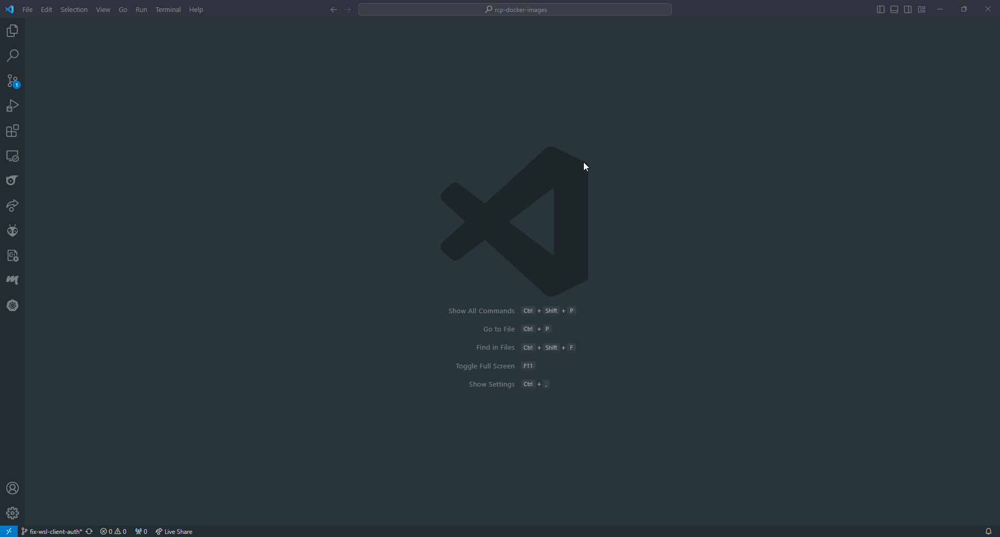

Connecting to RCP
1. Pre-setup (access to scratch and cluster)
Please ask Mark to add you to the corresponding groups. You can check your groups at https://groups.epfl.ch/
2. Setting-up credentials
This part makes sure that you have access to GitHub, wandb and huggingface from the cluster. If it's not already done, create an account on those platforms!
To setup the credentials, we must access the scratch in haas001.rcp.epfl.ch using ssh. The password is your GASPAR credentials:
ssh $GASPAR@haas001.rcp.epfl.ch
For this part, every command will be done from the ssh terminal
Go in the scratch directory (/mnt/mlo/scratch):
# SSH terminal
cd /mnt/light/scratch/users
mkdir $GASPAR
WANDB and HuggingFace credentials
We will store the API keys within our directory in a folder that only our user will have access to. Both the wandb and Hugging Face API keys will be stored in a .txt file within this protected folder.
# SSH terminal
cd /mnt/light/scratch/users/$GASPAR_USER
mkdir keys
cd keys
touch hf_key.txt
touch wandb_key.txt
chmod 700 -R ../keys/
- For Huggingface: you can create a new access token at https://huggingface.co/settings/tokens. Put this token in the file
hf_key.txt - For WANDB: you can access your tokens at https://wandb.ai/settings. Scroll down to "API keys". Put this token in the file
wandb_key.txt
Github credentials
To carry out the automatic login to GitHub, we will need to store our git identification (.gitconfig) and our access credentials (.git-credentials), which in this case we will do using a Personal Access Token.
To do this, we will need to set the environment variable $HOME to the personal folder we have created and activate the credential helper that will store our access credentials.
# SSH terminal
export HOME=/mnt/light/scratch/users/$GASPAR_USER
git config --global credential.helper store
Then we will configure our git identification, specifying a username and email address.
# SSH terminal
git config --global user.name "GITHUB_USERNAME"
git config --global user.email "MY_NAME@example.com"
Create a Personal access token. Select Generate new token and the classic option. Give every permissions to this token.
Finally, we will execute an action that requires our identification on GitHub to enter our access credentials and store them (e.g. Clone a private repository). When prompted for the password, we will enter the Personal Access Token that we created:
# SSH terminal
git clone https://github.com/OpenMeditron/MultiMeditron.git
If you were able to clone the repo, then your setup is correct.
Remote VSCode configuration
We will store the configurations related to VSCode in a folder in the scratch volume so that we don't have to download them every time we start a new container.
# SSH terminal
mkdir /mnt/light/scratch/users/$GASPAR_USER/.vscode-server
3. Setup runai and kubectl on your machine
IMPORTANT: The setup below was tested on macOS with Apple Silicon. If you are using a different system, you may need to adapt the commands. For Windows, we have no experience with the setup and thereby recommend WSL (Windows Subsystem for Linux) to run the commands. If you choose WSL, you should choose the commands as if you were running Linux.
Install kubectl
# Your terminal (either WSL, Linux or Mac)
curl -LO "https://dl.k8s.io/release/v1.29.6/bin/darwin/arm64/kubectl"
# Linux: curl -LO "https://dl.k8s.io/release/v1.29.6/bin/linux/amd64/kubectl"
# Give it the right permissions and move it.
chmod +x ./kubectl
sudo mv ./kubectl /usr/local/bin/kubectl
sudo chown root: /usr/local/bin/kubectl
Setup the kube config file: Take our template file kubeconfig.yaml as your config in the home folder ~/.kube/config. Note that the file on your machine has no suffix.
# Your terminal
mkdir ~/.kube/
curl -o ~/.kube/config https://raw.githubusercontent.com/epfml/getting-started/main/kubeconfig.yaml
Install the run:ai CLI for RCP (two RCP clusters):
# Your terminal
# Download the CLI from the link shown in the help section.
# for Linux: replace `darwin` with `linux`
wget --content-disposition https://rcp-caas-prod.rcp.epfl.ch/cli/darwin
# Give it the right permissions and move it.
chmod +x ./runai
sudo mv ./runai /usr/local/bin/runai
sudo chown root: /usr/local/bin/runai
4. Login
The RCP is organized into a 3 level hierarchy. The department is the laboratory (e.g. LIGHT or MLO). The projects determine which scratch (aka persistent storage) we have access to. Note that you should choose the SSO option when executing runai login.
# Your terminal
runai config cluster rcp-caas-prod
runai login
runai list project
runai config project light-$GASPAR
5. Submit a job
Time to test if we can submit a job! This command will allocate 1 GPU from the cluster and "sleep" to infinity (meaning that it will do essentially nothing)
# Your terminal
runai submit \
--name meditron-basic \
--image registry.rcp.epfl.ch/multimeditron/basic:latest-$GASPAR\
--pvc light-scratch:/mloscratch \
--large-shm \
-e NAS_HOME=/mloscratch/users/$GASPAR \
-e HF_API_KEY_FILE_AT=/mloscratch/users/$GASPAR/keys/hf_key.txt \
-e WANDB_API_KEY_FILE_AT=/mloscratch/users/$GASPAR/keys/wandb_key.txt \
-e GITCONFIG_AT=/mloscratch/users/$GASPAR/.gitconfig \
-e GIT_CREDENTIALS_AT=/mloscratch/users/$GASPAR/.git-credentials \
-e VSCODE_CONFIG_AT=/mloscratch/users/$GASPAR/.vscode-server \
--backoff-limit 0 \
--run-as-gid 84257 \
--node-pool h100 \
--gpu 1 \
-- sleep infinity
Note: If you have issue with the job not being launched (after doing a
describe), ensure that there is such an image in the registry. You can build your image following the docker tutorial.
Explanation:
nameis the name of the jobimageis the link to the docker image that will be attached to the cluster. Please note that you may need to change the image path if you pushed your image on another link. See Building Docker image for the RCPpvcdetermines which scratch will be mounted to the job. The argument is of the form:name_of_the_scratch:/mount/path/to/scratch. Here the we are mounting the scratch namedlight-scratchto the local path/mloscratchThis is part may cause an error because of the LIGHT migrationgpuis the number of GPU that you want to claim for this job (larger amount of GPU will be harder to get as ressources are limited)
We can check the outputs of our container and the status of the job using the following commands respectively.
# Your terminal
runai logs meditron-basic
runai describe job meditron-basic
To end a job, run the command:
# Your terminal
runai delete job meditron-basic
You can access your job by doing
# Your terminal
runai bash meditron-basic
You should see a terminal opening. Enter the following command in your new terminal to ensure that you have indeed a GPU:
# Job terminal
nvidia-smi
Once you are done, run the following command to delete the job:
# Your terminal
runai delete job meditron-basic
6. VSCode connection
Mac and Linux
Once we have the container running on a node of the RCP cluster, we can attach to it in VSCode. To do this, we need to have the following extensions installed:
From the Kubernetes menu, we can see the IC and the RCP Cluster. We will enter the menu of the RCP Cluster -> Workloads -> Pods and we will see our container with a green indicator showing that it is running. Right-clicking on it will give us the option to "Attach to Visual Studio". Upon clicking, the editor will open in a new window within the container. When opening a new terminal, we will find ourselves directly in our personal folder. We can install new extensions, and they will be saved for future sessions.
Windows (WSL connection)
For WSL setup, you will need kubernetes on your Windows host because VSCode is going to look for it on the host (and not in WSL).
In Windows terminal (not WSL), run:
# Windows terminal
curl.exe -LO "https://dl.k8s.io/release/v1.32.0/bin/windows/amd64/kubectl.exe"
Create a folder ~/.kube in Windows:
# Windows terminal
mkdir ~/.kube/
In WSL, claim a job and copy the kube configuration file from WSL to Windows
# WSL terminal
runai submit \
--name meditron-basic \
--image registry.rcp.epfl.ch/multimeditron/basic:latest-$GASPAR\
--pvc light-scratch:/mloscratch \
--large-shm \
-e NAS_HOME=/mloscratch/users/$GASPAR \
-e HF_API_KEY_FILE_AT=/mloscratch/users/$GASPAR/keys/hf_key.txt \
-e WANDB_API_KEY_FILE_AT=/mloscratch/users/$GASPAR/keys/wandb_key.txt \
-e GITCONFIG_AT=/mloscratch/users/$GASPAR/.gitconfig \
-e GIT_CREDENTIALS_AT=/mloscratch/users/$GASPAR/.git-credentials \
-e VSCODE_CONFIG_AT=/mloscratch/users/$GASPAR/.vscode-server \
--backoff-limit 0 \
--run-as-gid 84257 \
--node-pool h100 \
--gpu 1 \
-- sleep infinity
cp ~/.kube/config /mnt/c/Users/$WINDOWS_USERNAME/.kube/config
Open VSCode. Install this extension: https://marketplace.visualstudio.com/items?itemName=mtsmfm.vscode-k8s-quick-attach.
To attach VSCode to your job: Go to View -> Command Palette (or Ctrl+Shift+P), search for "k8s quick attach: Quick attach k8s Pod" -> rcp-caas -> runai-mlo-GASPAR -> meditron-basic-0-0 -> /mloscratch/users/$GASPAR_USER.
VSCode Troubleshooting
If you encounter the following error:

Run:
# WSL terminal
runai login
cp ~/.kube/config /mnt/c/Users/$WINDOWS_USERNAME/.kube/config
And try to attach VSCode again
More ressources
- EPFL RCP Wiki
- runai submit Documentation